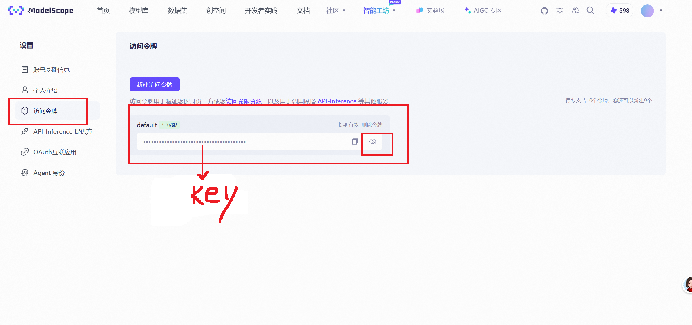

魔搭是阿里的开源模型社区，推理 API 与 OpenAI 格式完全兼容。本页结合本项目的真实踩坑记录，带你走完：领 Key → 改三个值 → 页面跑通。
大模型应用落到代码上只有三件事：拿到钥匙（API Key）、把问题发给模型接口、把回答显示到页面上。
为什么不直接从网页调模型接口？因为请求里必须带 API Key，网页代码按 F12 就能看见。Key 放进前端，等于把家门钥匙贴在门上。
.env 里，前端只把请求发给自己的后端，由后端带着 Key 去请求魔搭。
.env 必须在 .gitignore 里）、不截图发群里。展示时一律打码成 ms-****。
魔搭的 Key 是 ms- 开头。注册链接：https://modelscope.cn。注意：魔搭的推理服务有两道强制认证，漏掉任何一道都会 403。
用手机号或支付宝直接登录 modelscope.cn，右上角头像 → 复制你的账号昵称备用。
个人中心 →「账号绑定」→ 绑定阿里云账号。不绑定直接报错：Please bind your Alibaba Cloud account before use（403）。
前往 modelscope.cn/my/settings/account 完成邮箱验证。漏掉这步会报错：please complete your profile via email verification（403）。两道认证都过了，推理接口才会放行。
个人中心 →「访问令牌 / API Key」→ 新建 → 立刻复制（ms- 开头）。Key 只显示一次，关掉弹窗就再也看不到原文。

👆 截图指引：左侧菜单选「访问令牌」，红框内就是你的 Key（点击复制按钮，或用眼睛图标临时显示原文）
curl 就是"在命令行里发一个 HTTP 请求"的小工具。先用它测通，再写页面。
🪟 Windows 用 PowerShell 时换行符是反引号 `（不是 CMD 的 ^）。
"content":"你好！我是……" 这样的中文回答，说明 Key 和两道认证都没问题。
好处：以后换 Key 或换模型只改这一行，代码一行都不用动。
Qwen/Qwen2.5-7B-Instruct 已从魔搭推理服务下架（返回 400 has no provider supported）。拿不准就先查模型列表：GET /v1/models，选一个现役模型。
| 应用 | 页面 | 后端接口 | 说明 |
|---|---|---|---|
| AI 作文批改 | /essay-grading.html | POST /api/essay-grading | 中文作文（100分制）/ 四级作文与翻译（15分制 6 档，折合 106.5），服务商可选魔搭 |
| 在线客服 | /customer-service.html | POST /api/customer-service | 客服人设 + 服务商下拉框热切换（硅基流动 / 七牛），同思路可加魔搭 |
| 知识库问答（RAG） | /kb-chat.html | POST /api/customer-service | 上传 docx 知识库，检索分块注入提示词后作答 |
| 图像识别 | /image-recognition.html | POST /api/image-recognition | 走视觉模型（MODELSCOPE_VISION_MODEL） |
| 现象 | 真正的原因 | 怎么解决 |
|---|---|---|
| 403 bind your Alibaba Cloud account | 没绑定阿里云账号 | 个人中心 → 账号绑定 → 绑定阿里云（免费） |
| 403 email verification | 没做邮箱验证（最常漏） | modelscope.cn/my/settings/account 完成验证 |
| 400 has no provider supported | 模型已下架（如 Qwen2.5-7B-Instruct） | GET /v1/models 查现役模型，改 .env 的 MODELSCOPE_MODEL |
| 401 | Key 错了、少写 Bearer、复制带空格 | 重新复制 Key；请求头 Authorization: Bearer ms-xxx |
| 429 | 限流，请求太频繁 | 加几百毫秒延迟重试（本项目已内置限流重试） |
| 页面 CORS 报错 | 前端直接请求了模型接口 | 改走自己的后端 /api/* 转发，Key 顺便藏好 |
| 改了 .env 没生效 | 后端没重启 | 重启后端服务（dotenv 只在启动时读取） |